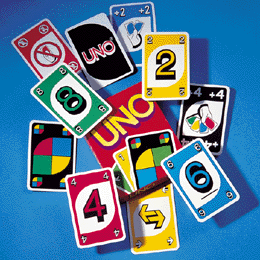

 Uno is one of the world's most popular family card games, with rules easy enough for kids, but challenges and excitement enough for all ages. Uno uses a special set of cards of 4 different colors (blue, red, yellow and green) with values from 0 to 9. There are lots of special cards used but in this particular problem we will only use two of them: the "change-direction" card and the pass card. We will explain their meaning later, but for now know that they exist and that they also have colors.
At the beginning of the game, each player is dealt 7 cards with the remaining ones placed face down to form a "draw" pile. The top card of the draw pile is turned over to begin a "discard" pile. The first player has to match the card in the discard pile either by number or color. For example, if the card is a blue 2, player must throw down a blue card or 2 card of any color. If the card is a red change-direction, then it has to play a change-direction of any color or a red card. If the player doesn't have anything to match, he must pick a card from the top of the draw pile. If he can play what is drawn, great, he can then play the card right away. The card is played putting it with the face up on the top of the discard pile. Otherwise he must keep the card he has drawn on his hand. After that the game continues to next player, who must do the same thing as the start player, except that it must always "obey" to top card of the discard pile. The objective of the game is to be the first one so stay with zero cards. That player will win.
The two special cards, when played, have special meaning. When someone plays the change-direction card, the games changes its "direction". Initially the games goes in clockwise direction. A change-direction card changes its direction to counter-clockwise. A new change-direction card will again change the direction to clockwise and so on. So imagine that there are 4 players numbered from 1 to 4 playing. 1 plays a "normal" card, then two plays the change-direction card. In that case, player 1 would play again and after him would play player 4, then 3, and so on. The other special card is the pass card. When someone plays this card, the next player will not be able to play and the game continues with the player after him. For example, in normal direction, if player 1 plays the pass card, the game will continue to player 3, since player 2 will not be able to play. Player 3, of course, would be able to play another pass card of any color, or a card of the same color of the pass card on the discard pile.
There is also one last rule. If the draw pile is emptied, then you will pick all the cards in the discard pile (except the top one) and put them on the discard pile, with face down, effectively reversing the order on which they were. This is, the bottom card of the discard pile will now be the top card of the draw pile. Remember that the top card of the discard pile remains there and does not go to the draw pile. Also, if in any situation, someone has to draw a card but there are no cards available (it may happen that only exists one card in the discard pile and none on the draw one), then the game will continue to the next player.
# of colors | # of values 1: blue | 1: pass 2: red | 2: change-direction 3: yellow | 3-13: all numbers, starting in 0 and ending in 9 4: green |Figure 1 - Ranking of colors and values
Now suppose everyone uses the same strategy to play. To do that, we will first rank all the colors and the values as you see in figure 1. Then, each player will always choose the most ranked card he can play. For example, we will prefer to play a blue 2 to a red 2, and we will always favour the yellow pass card to the yellow change-direction card, the 5 green card to the 7 green card. Other example: if the card on the top discard pile is the red 3 and we have in our hand the red pass card and the blue 3, we will play the blue 3, since the colors have precedence over values.
In this way, if we know the exact contents of all player hands and of the draw and discard pile, then we will know the outcome of the game!
Your task will be to predict the outcome of a partially begun game of Uno when all the players use the strategy described above. You will be given the cards each player has and also the cards in the draw and discard piles. You must output who wins the game and how many cards the other players stay with.
The first line will contain the current direction of the game and the current player in the form "DIRECTION PLAYER_NUMBER". The direction will be 'clockwise' if the game is running on the normal direction (player 1, then 2, then 3, then 4, then 1, etc) or 'counter-clockwise' if the game is on the opposite direction. The PLAYER_NUMBER indicates who will be the first player to play in your simulation.
Then come four lines describing the hands of each of the 4 players. Each line starts by having an integer telling how many cards he has in its hand. Then come the cards themselves. Each card is described by a string of length 2. The first char is the color of the card (B, R, Y or G meaning blue, red, yellow or green) and the second one is its value (0...9, P or C meaning a number, pass card or change-direction card). The first line of the players is always the player 1, the second one is player 2 and so no. No player will have more than 100 cards in its hand on any time of the game.
After that come two more lines describing first the discard pile and then the draw pile. Each of these lines come in the same format of the player hands. First an integer telling how many cards and then the cards themselves. Both these piles are described from the top most card to the bottom one. Both this piles will not have more than 100 cards.
The card of the players and of the piles can come in any order, this is, they are not sorted in any way. And a deck of Uno can have repeated cards (for example, there can be more than one blue pass card).
You must always output 5 lines of output. The first line should be PLAYER_NR is the winner indicating which player won the game. You can assume that every game given will always have an end. Then comes one line for each player in the form PLAYER_NR: NUM_CARDS, telling how many cards each player had in the end of the game. These lines should always be in ascending order of the player number. Of course that the winning player will always have zero cards, right?
clockwise 1 3 RP GC Y2 2 Y4 YC 4 R3 R8 G9 R9 3 G8 YC B8 1 R2 20 R2 GP Y1 Y2 Y3 Y4 Y5 R5 Y0 R4 Y1 R3 Y2 R2 Y3 R1 Y4 R0 BC Y5 counter-clockwise 3 1 Y4 1 Y3 2 Y2 YP 3 G5 GC G4 5 R9 B3 G9 BP BP 3 Y8 Y6 R5
1 is the winner 1: 0 2: 1 3: 3 4: 3 4 is the winner 1: 2 2: 4 3: 5 4: 0
2005 Programming Contest of Porto University
Round 2, 28 of September of 2005
(Author: Pedro Ribeiro - DCC/FCUP)